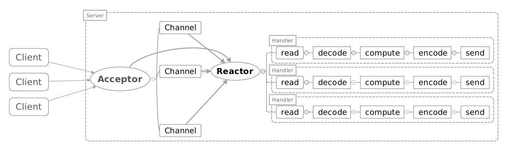
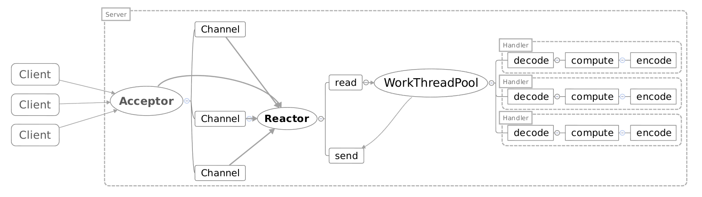
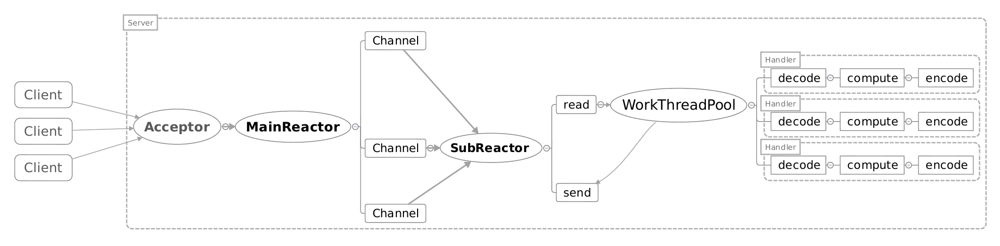
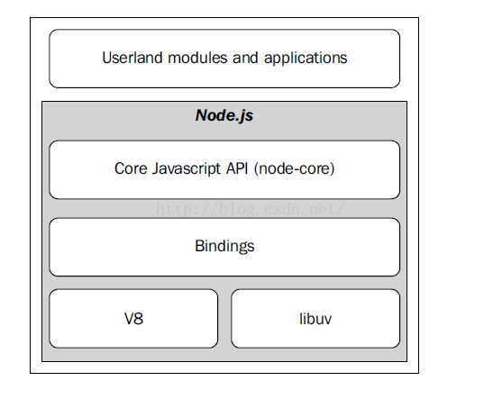

reactor
同步，异步，阻塞，非阻塞
Synchronous IO: operatins causes the requesting process to be blocked until that io operation completes.
Asychronrous IO: operations that does not cause the requesting process to be blocked.
阻塞：程序会自己挂起等待结果。
非阻塞：如果数据没有准备好，程序不关系结果直接返回。需要程序自己回去检查数据是否就绪。
简单来讲，同步针对的是程序和kernel的通信。如果一个操作会返回结果（数据准备好或者没准备好），那么这个call就是同步的。反之，如果一个call不返回结果（我不知道数据怎么样，需要kernel自己回调函数），那么这个call就是异步的。
所以，同步可以阻塞也可以非阻塞，看程序本身如何应对返回结果（是直接从kernel拷贝数据还是先返回）。
异步只能非阻塞（因为异步表示kernel会将所有东西准备好然后回调函数，所以不存在call需要等待的情况）。
如果一个call需要自己去查询数据是否就绪，则一定为同步（epoll很tricky，虽然运用了callback，但仍旧需要epoll_wait去检查，所以是同步的）
select/poll/epoll都是同步。
如果epoll_wait(timeout)timeout=-1，阻塞（知道捕获到信号）。timeout=0，非阻塞，直接返回。timeout>0阻塞n毫秒。
总结，IO call分为两步
- 询问数据是否就绪。
- 将数据从kernal拷贝到进程。
同步异步针对两个步骤，任何一个阻塞，都为同步。
阻塞非阻塞针对步骤1，步骤二不理会。
reactor的特点
- 事件驱动
- 处理多个输入源
- 通过service handler同步的将输入事件（event）采用多路复用（select/poll/epoll）分发给相应的request handler同步的将输入事件（event）采用多路复用（select/poll/epoll）分发给相应的request handler处理。
单线程reactor：一个线程来处理连接，读写，计算。消息的处理被放到独立的handler中。


多线程reactor：为handler开启不同的县城。

主从reactor模型：main reactor针对连接，subreactor针对io操作。
nodejs

由上图可知，nodejs包括顶层的javascript（程序员层面）和底层的V8, libuv（底层io实现）。
JS层面，程序是同步阻塞单线程的。如果语句出现问题，则整个程序卡住。
事件循环函数会不断检查事件队列中有没有需要处理的时间，直到程序结束。此循环对开发者不可见，由libuv实现。
libuv是一个底层的用c实现的异步io库。通过主线程检查事件队列，线程池来处理不同handler。
nodejs编写简单，处理并发时有独特的优势。然而，当某需求需要在js上大量的cpu计算时，单线程的劣势就体现出来了。